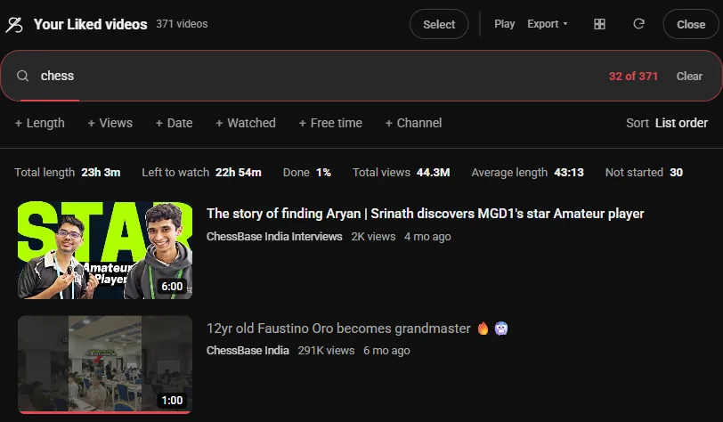
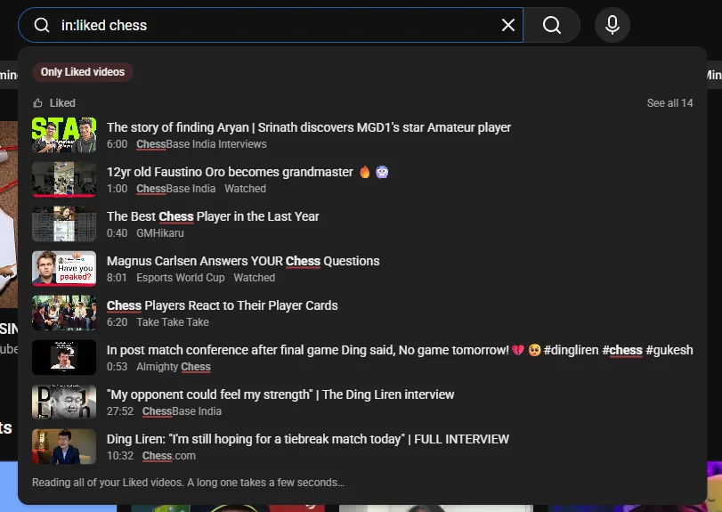

Guide 15·Liked videos
How to search your liked videos on YouTube.
Updated 10 November 2026
Short answer
YouTube's Liked videos page has no search box and no sort menu, and the search bar at the top searches all of YouTube, not your likes. Ctrl+F only finds what the page has loaded so far. Needle adds both: on the Liked page press Search your Liked videos, or type in:liked and a word into YouTube's search bar from anywhere.
01·On YouTube
What YouTube gives you
Your liked videos are under You in YouTube's left sidebar, as Liked videos. The page lists them most recently liked first, 100 at a time as you scroll. Above the list there are three chips, All, Videos and Shorts, and that's it: no search box, and no sort menu. Watch Later has a sort menu, with date added and date published both ways. Liked videos doesn't.
So finding a video you liked a year ago means scrolling until it loads, then Ctrl+F, and hoping you remember a word from its title.
02·With Needle
Search it with Needle
- Open Liked videos.
- Press Search your Liked videos in the bottom right corner (or Alt+Y). Needle reads the list and shows its total length.
- Type a word. It matches titles and channel names as you type.

To see your likes oldest first, set Sort to List order, reversed. The sort menu also has newest and oldest upload, most views, longest and shortest.
03·Lists and search
From YouTube's search bar
You don't have to open the Liked page. Type in:liked and a word into YouTube's own search bar, anywhere on YouTube, and your liked videos that match show up under it as you type. See all opens every match in Needle's panel.

04·Filters
Filters
in:liked chess | Liked videos about chess, from anywhere on YouTube |
<10m | Under 10 minutes |
@name | Only from that channel |
unwatched | Liked, but never started |
sort:oldest | Oldest uploads first |
They combine: in:liked @gothamchess <15m. The search filters guide lists the rest.
05·Questions
Questions?
Can I see my liked videos oldest first?
Yes. In Needle's panel on the Liked page, set Sort to List order, reversed. The first video you ever liked goes to the top.
Does it find a video by its channel?
Yes. Words match the title or the channel's name, so chess finds GothamChess's videos even when the title doesn't say chess.
Does it work on Watch Later and history too?
Yes. in:wl searches Watch Later and in:history your watch history, the same way.
Does my list go anywhere?
No. Needle reads it in your browser, from YouTube's own pages. Nothing leaves your browser.
Is it free?
Yes. No account, no trial, no paid tier.